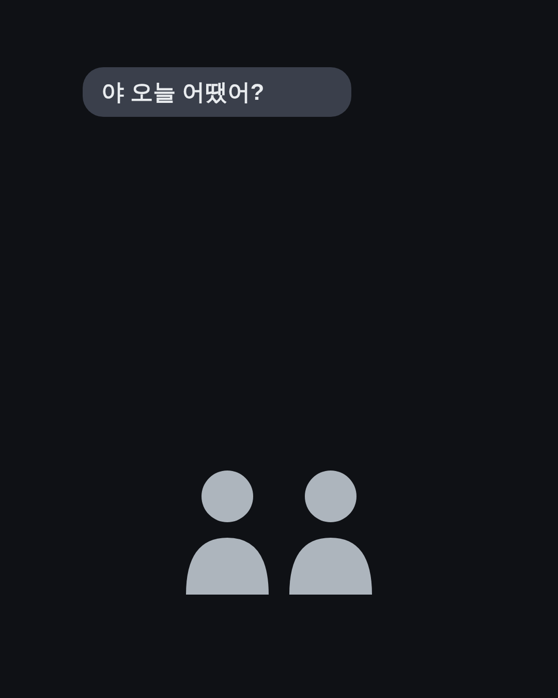
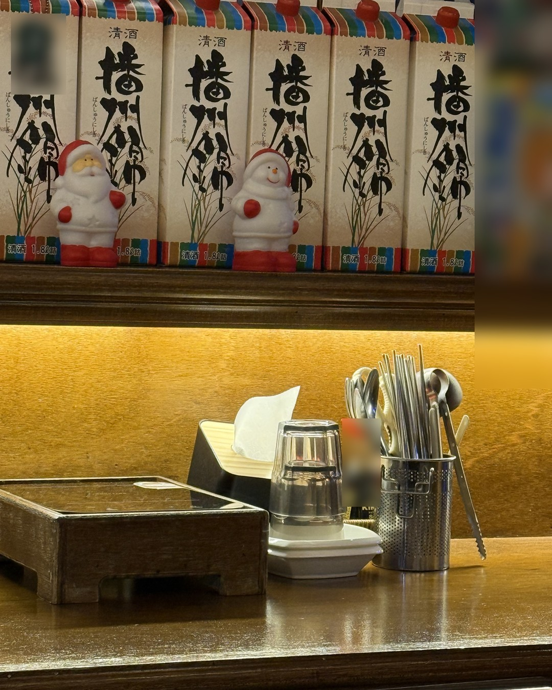
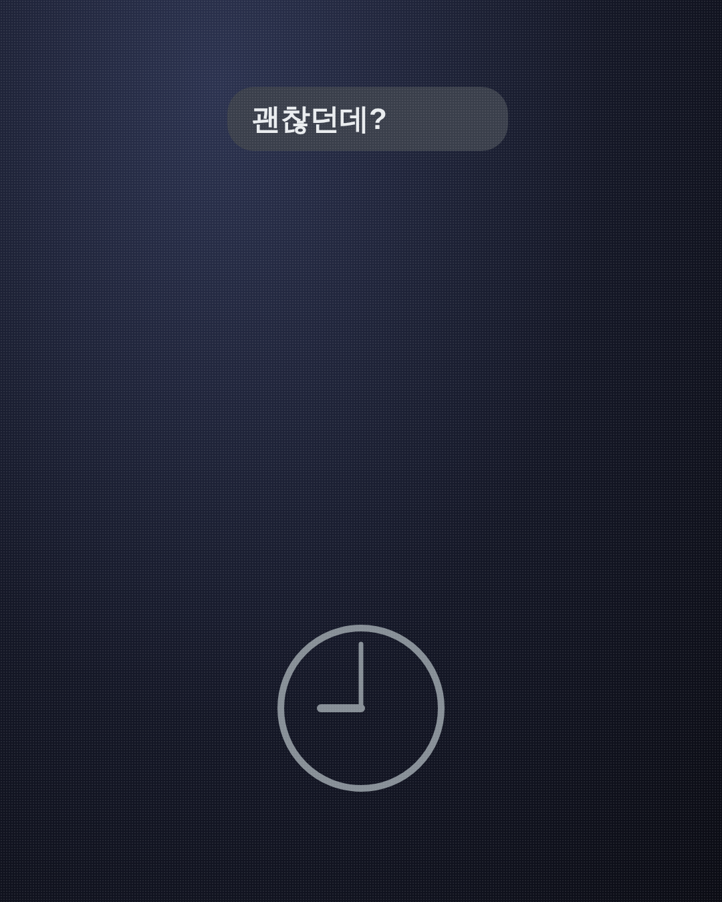
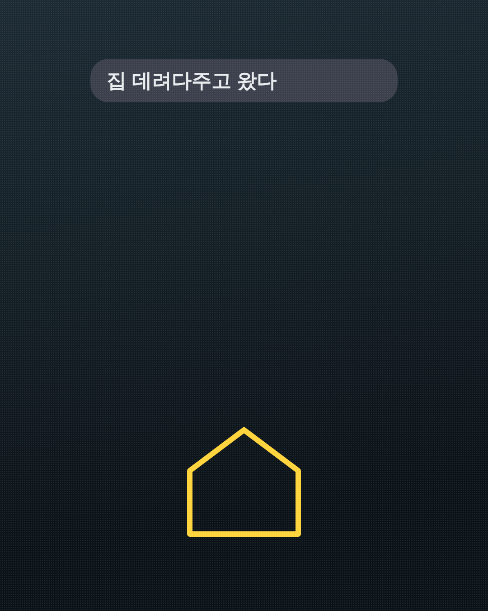
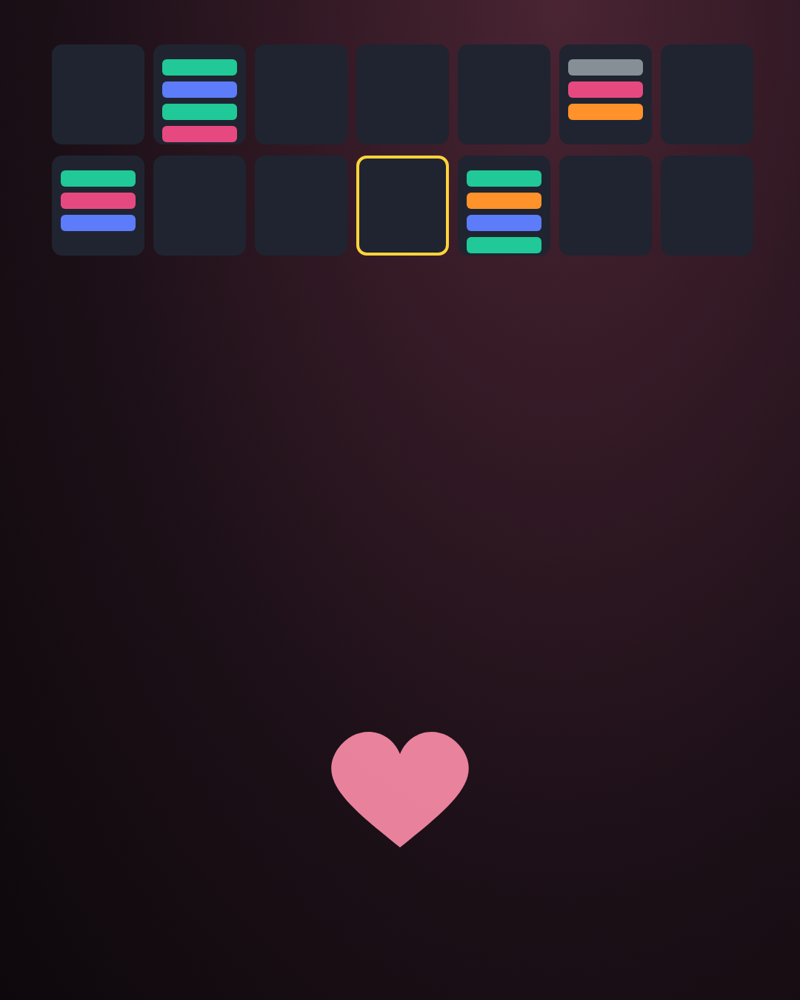
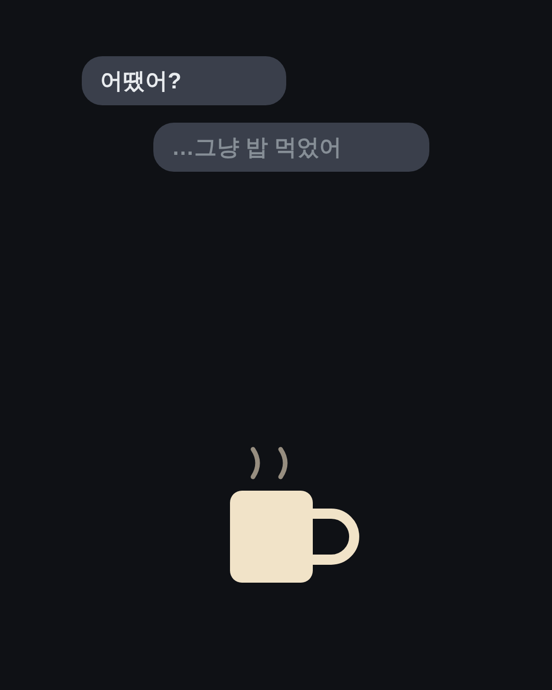
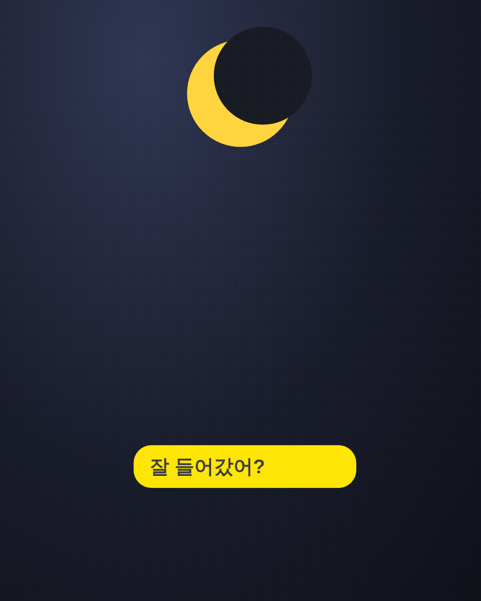
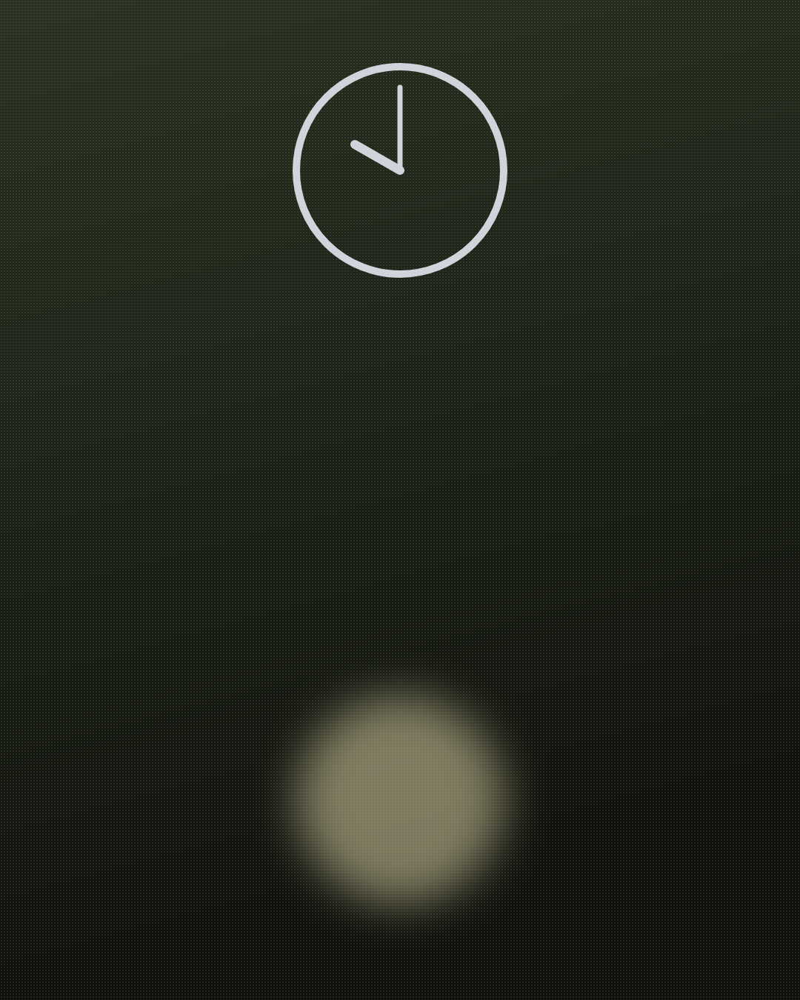
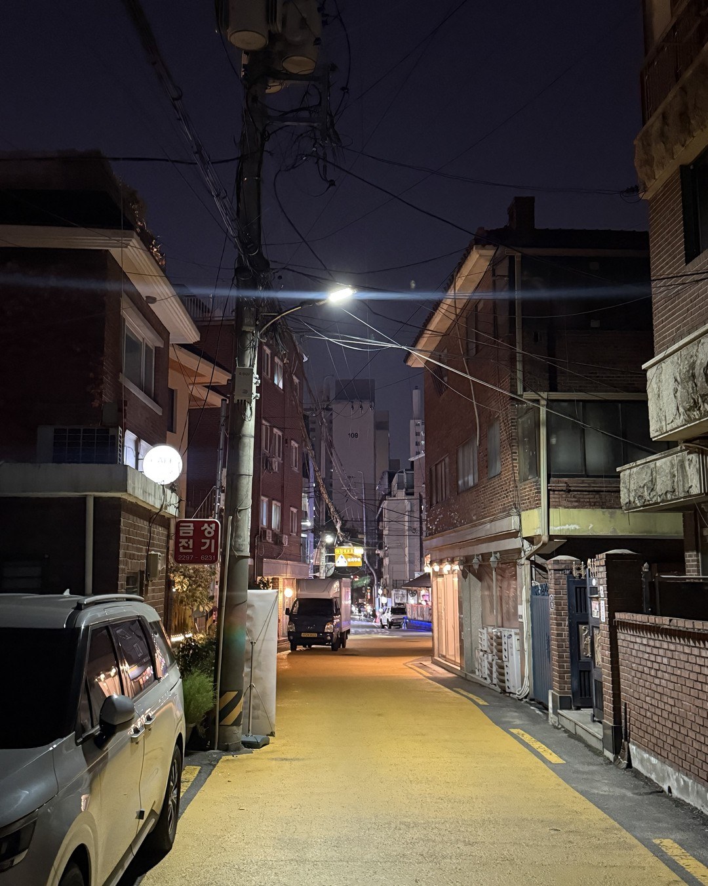

첫 데이트 끝나고, 남자가
친구한테 보내는 첫 문장
(이 한 줄에 다 있어요.)
1/14
@mszexc
넘겨보세요 →

첫 데이트가 끝나면
남자는 친구한테 먼저 보고해요.
2/14
@mszexc
남자들끼리 하는 말 #58

그 첫 문장에
다음 만남이 이미 정해져 있어요.
3/14
@mszexc
남자들끼리 하는 말 #58

첫 번째.
"괜찮던데?"
(나쁘지 않음. 아직 반반이에요.)
4/14
@mszexc
남자들끼리 하는 말 #58
두 번째.
"야 근데 대화가 너무 잘 통해."
(관심 시작. 다음 약속을 고민 중이에요.)
5/14
@mszexc
남자들끼리 하는 말 #58

세 번째.
"집 데려다주고 왔다."
(묻지도 않았는데 이걸 말하면, 꽤 마음에 든 거예요.)
6/14
@mszexc
남자들끼리 하는 말 #58

네 번째.
"다음 주에 또 보기로 했어."
(남자가 날짜를 말하면, 이미 마음이 정해졌어요.)
7/14
@mszexc
남자들끼리 하는 말 #58

남자들끼리는 이렇게 말해요.
"어땠어?" "…그냥 밥 먹었어."
(말을 아끼면, 말할 게 없는 거예요.)
8/14
@mszexc
남자들끼리 하는 말 #58
반대로
외모 얘기만 한다면.
("예쁘긴 하더라"로 끝나면, 거기까지예요.)
9/14
@mszexc
남자들끼리 하는 말 #58

그리고 이 신호도 있어요.
그날 밤, 먼저 연락이 와요.
"잘 들어갔어?"
10/14
@mszexc
남자들끼리 하는 말 #58
남자는
마음에 들면 그날 안에 확인해요.
(다음 날까지 미루지 않아요.)
11/14
@mszexc
남자들끼리 하는 말 #58

그러니 첫 데이트 뒤엔
먼저 연락하지 말고, 하루만 기다려 보세요.
(그 하루가 남자의 마음을 보여줘요.)
12/14
@mszexc
남자들끼리 하는 말 #58

연락이 오면
"나도 오늘 재밌었어."
(질문 없이, 짧게. 다음은 남자가 정하게.)
13/14
@mszexc
남자들끼리 하는 말 #58
이것만 기억하세요.
남자의 마음은 친구한테 보낸 첫 문장에 있어요.
남자가 하는 말의 뜻은 전자책 1·2권에 · 프로필 링크에서 무료로 받아보세요
14/14
@mszexc
남자들끼리 하는 말 #58